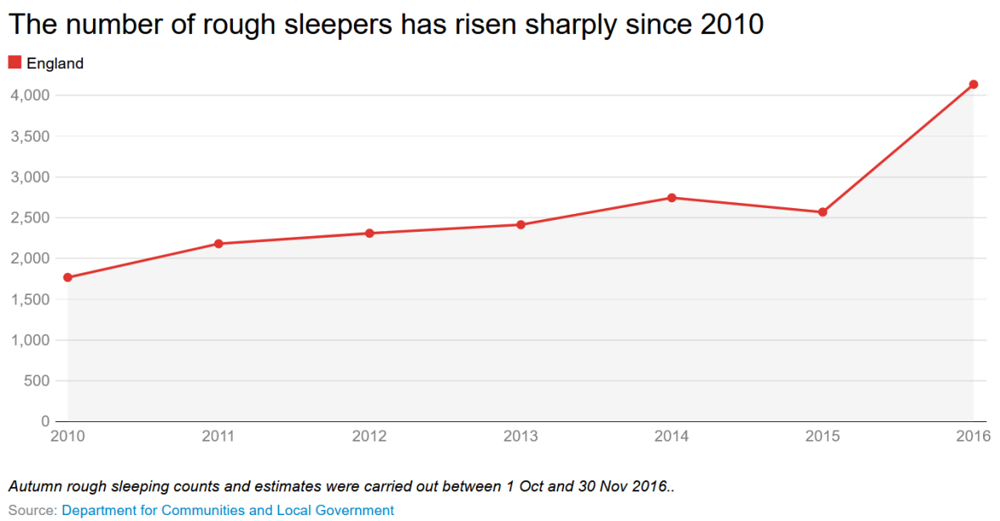
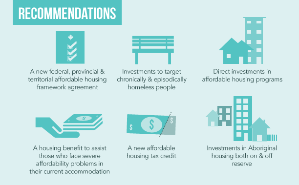

If it were a choice, would you choose this?
https://www.blogto.com/city/2021/02/toronto-buildings-turned-into-homeless-shelters-past-year/
Is this what you would choose?
https://www.cbc.ca/news/canada/toronto/homeless-coronavirus-canada-toronto-covid19-1.5492322
For instance, the leading trigger which results in individuals ending up on the streets is the lack of affordable long term housing.
This trigger is clearly not in the hands of the individuals. The government is mostly responsible for providing access to individuals who cannot afford housing
The main cause for this again is a lack of access to affordable housing.
As well as lack of government funding and help for individuals who are most at risk of going homeless such as individuals being discharged from prison or hospital
There are other factors involved that indicates why individuals have to remain homeless such as safety.
Often couples are discriminated against at homeless shelters, thus couples often choose to remain together on the streets in order to keep each other safe
Homelessness has been on the rise
This graph shows the increase in people without homes in England between 2010 and 2016
One major contributing factor is homeless people not being able to find housing.
Without effective housing solutions that scale well, the homeless population is left to the streets, and will only grow as time goes on with no other options.
https://www.blogto.com/city/2021/02/toronto-buildings-turned-into-homeless-shelters-past-year/
There are many proposed solutions, ranging from simply building more affordable housing to creating a new affordable housing tax credit.
